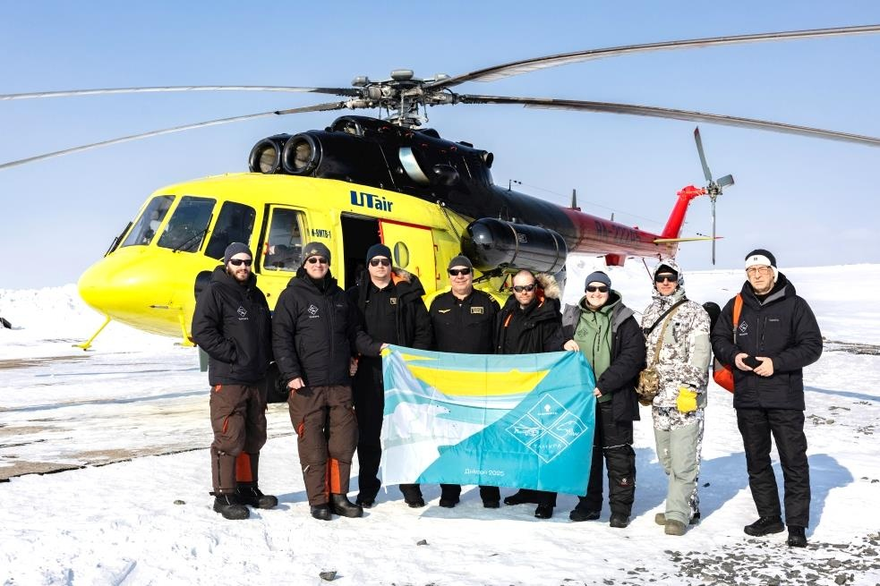
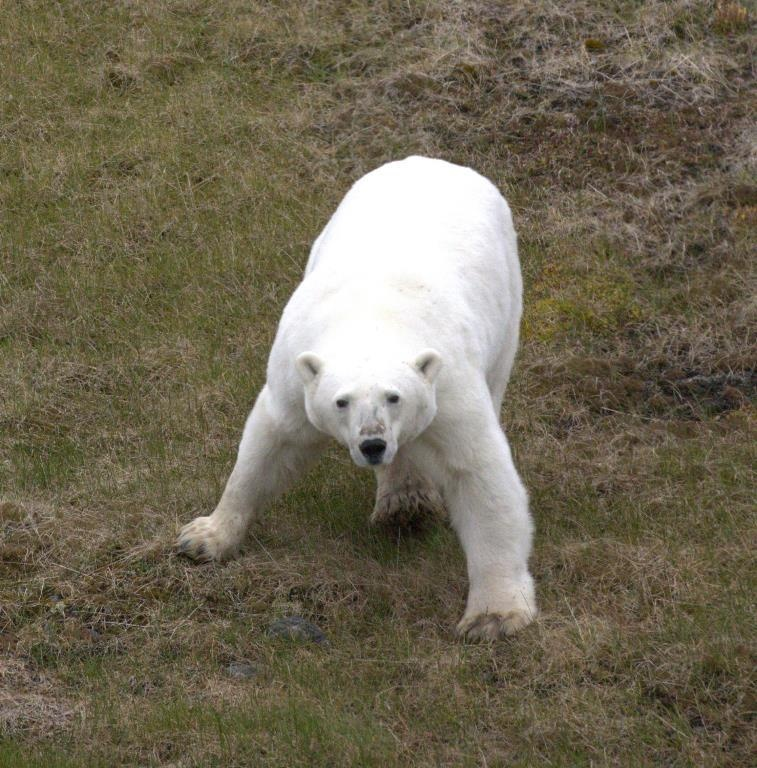
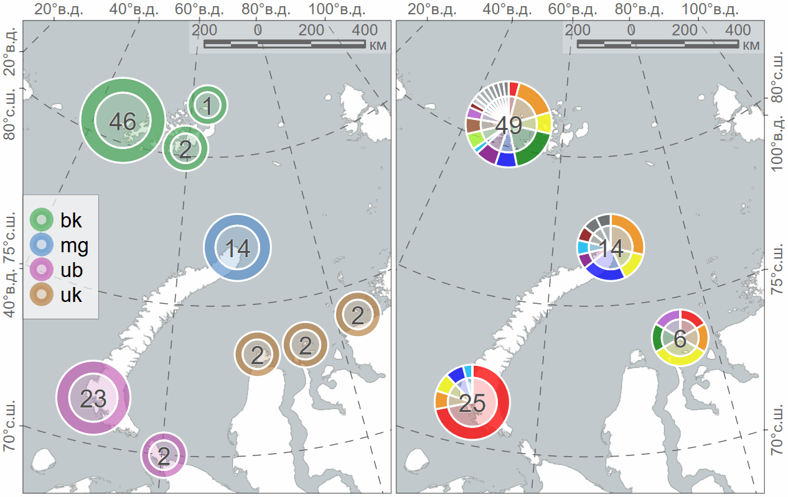
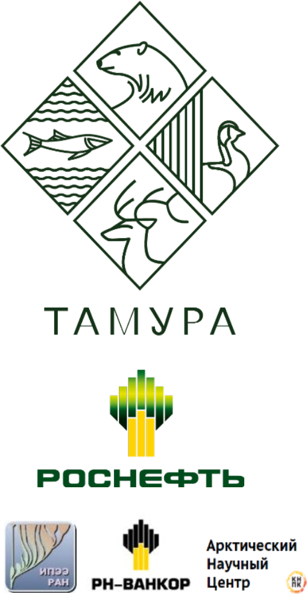

layout: true .toc.banner[ .sevinlogo[ ] .rosneft[ ] .tamura[ ] .tamura-multi[ ] .shorttitle[ ] ] --- name: home class: metadata customtitle middle left giphy .toc.sidebar.left-column[ .outline[ # [О программе](#tamura) # [Данные](#zzzmethods) # [Результаты ](#H1829c) # [.pass[Обсуждение] ](#H9a23f) # [Выводы ](#H34dac) ] ] .toc.mainbar.right-column.scrollable[ .authors[ .author[.speaker[Платонов Н. Г.], Иванов Е. А., Мордвинцев И. Н., Артемьева С. М., Найденко С. В.] .institute[Институт проблем экологии и эволюции им. А. Н. Северцова Российской академии наук, г. Москва] .author[Исаченко А. И., Лазарева Р. Е.] .institute[ООО «Арктический Научный Центр», г. Москва] ] .title[ <p>Спутниковая биотелеметрия белых медведей Карского моря</p><p>Программа сохранения биоразнообразия «ТАМУРА» компании «Роснефть»</p> ] .subtitle[ ] .what[ ] .where[ ] .when[ .updated[Обновлено: 2025-10-31 10:17] ] ] --- name: tamura .toc.sidebar.left-column[ .outline[ # [О программе](#tamura).fg[].bg[] # [Данные](#zzzmethods) # [Результаты ](#H1829c) # [.pass[Обсуждение] ](#H9a23f) # [Выводы ](#H34dac) ] ] .toc.mainbar.right-column.scrollable[ .header.h1.broad[ <span class="generation">О программе</span> ] .fixprecode[ .ecology[ Работы выполнены в рамках Программы сохранения биологического разнообразия компании «Роснефть» по соглашению с Минприроды России (национальный проект «Экология») ] .pulling[ .pull-left-65[ **Оценка численности и современного состояния белого медведя Карского моря:** + авиаучет животных по всей акватории Карского моря путем инструментальных и аэровизуальных наблюдений; + оценка встречаемости, распределения и половозрастного состава особей путем маршрутных вертолетных наблюдений в северо-западной части п-ова Таймыр в безледовый и ледовый периоды; + временное обездвиживание обнаруженных белых медведей и мечение спутниковыми передатчиками; + проведение морфометрических обмеров и отбор комплекса биологических проб для последующего анализа; + выявление закономерностей распределения и поведения белых медведей в безледовый и ледовый периоды, оценка физического состояния особей и их пищевых предпочтений; + токсикологические, серологические, биохимические и молекулярно-генетические исследования. ] .pull-right-35[ <div class="figure" style="text-align: left">  <p class="caption">Исполнители полевых исследований по белому медведю на Таймыре вместе с экипажем вертолета Ми-8АМТ-1</p> </div> ] ] ] ] ??? Самая масштабная с советских времён комплексная программа изучения арктического региона + исследования популяции дикого северного оленя на Западном Таймыре + исследования птиц на Бреховских островах + исследования рыб в устье Енисея + авиаисследования берегов Енисейского залива для разработки карт экологической чувствительности + белый медведь --- name: zzzmethods .toc.sidebar.left-column[ .outline[ # [О программе](#tamura) # [Данные](#zzzmethods).fg[].bg[] ## [Передатчики ](#H2f439) ## [.pass[Отловы] ](#Ha89d9) ## [Локации ](#H821e1) # [Результаты ](#H1829c) # [.pass[Обсуждение] ](#H9a23f) # [Выводы ](#H34dac) ] ] .toc.mainbar.right-column.scrollable[ .header.h1.broad[ <span class="generation">Данные</span> ] .fixprecode[ .pulling[ .pull-left-65[ ## Отловы Экспедиционные работы, обездвиживание с вертолёта: + 2024 г., безлёдный период, август-сентябрь. + 2025 г., ледовый период, апрель-май. ## Глубины и высоты Глобальная модель рельефа <span class="cite hovertext" data-hover="The GEBCO_2025 Grid - a continuous terrain model for oceans and land at 15 arc-second intervals"><a name=cite-GEBCO_2025></a>([GEBCO Bathymetric Compilation Group, 2025](#bib))</span>. + Преобразование в сетку с ячейкой 500 м. ## Береговая линия Упрощенные полигоны суши <span class="cite hovertext" data-hover="Data Derived from OpenStreetMap for Download"><a name=cite-OpenStreetMapData></a>([Topf and Hormann, 2025](#bib))</span>. + Преобразование к сегментам длиной до 10 м. ## Морской лёд Ледовые карты маргинальных зон (лёд умеренной сплоченности CT18, сплоченный лёд CT81) <span class="cite hovertext" data-hover="Daily Arctic Marginal Ice Zone (MIZ) and Overlay Shapefile"><a name=cite-USNIC_MIZ></a>([US NIC, 2022](#bib))</span>. + Растеризация в сетку с ячейкой 1 км. + Восстановление полей открытой воды CT01. ] .pull-right-35[  <img src="https://nsidc.org/data/seaice_index/images/daily_images/N_iqr_timeseries.png" width="1330" height="700" zuntouchable style="display: block; margin: auto auto auto 0;" /> ] ] ] ] --- name: H2f439 .toc.sidebar.left-column[ .outline[ # [О программе](#tamura) # [Данные](#zzzmethods).fg[] ## [Передатчики ](#H2f439).fg[].bg[] ## [.pass[Отловы] ](#Ha89d9) ## [Локации ](#H821e1) # [Результаты ](#H1829c) # [.pass[Обсуждение] ](#H9a23f) # [Выводы ](#H34dac) ] ] .toc.mainbar.right-column.scrollable[ .header.h2.broad[ <span class="generation">Передатчики</span> .parent[.grand[Данные]] ] .fixprecode[ .collars[ <div class="figure" style="text-align: left"> <img src="assets/Polar Bear Collar.jpg" alt="Спутниковый ошейник" width="1330" height="700" /> <p class="caption">Спутниковый ошейник</p> </div> <div class="figure" style="text-align: left"> <img src="assets/Ушная метка №1.jpg" alt="Ушная метка 2024 г." width="1330" height="700" /> <p class="caption">Ушная метка 2024 г.</p> </div> <div class="figure" style="text-align: left"> <img src="assets/Ушная метка №2.jpg" alt="Ушная метка 2025 г." width="1330" height="700" /> <p class="caption">Ушная метка 2025 г.</p> </div> ] ] ] --- name: Ha89d9 .toc.sidebar.left-column[ .outline[ # [О программе](#tamura) # [Данные](#zzzmethods).fg[] ## [Передатчики ](#H2f439) ## [.pass[Отловы] ](#Ha89d9).fg[] ### [2024 г.](#Ha89d9).fg[].bg[] ### [2025 г.](#H8b552) ## [Локации ](#H821e1) # [Результаты ](#H1829c) # [.pass[Обсуждение] ](#H9a23f) # [Выводы ](#H34dac) ] ] .toc.mainbar.right-column.scrollable[ .header.h3.broad[ <span class='generation'>Отловы 2024 г.</span> .parent[.grand[.pass[Отловы] .grand[Данные]]] ] .fixprecode[ <img src="assets/collar-2024.png" width="1330" height="700" style="display: block; margin: auto auto auto 0;" /> ] ] --- name: H8b552 .toc.sidebar.left-column[ .outline[ # [О программе](#tamura) # [Данные](#zzzmethods).fg[] ## [Передатчики ](#H2f439) ## [.pass[Отловы] ](#Ha89d9).fg[] ### [2024 г.](#Ha89d9) ### [2025 г.](#H8b552) <span class="bullet bullet-active">[•](#H8b552)</span><span class="bullet mslide11m">[•](#Hbe844)</span><span class="bullet mslide12m">[•](#H278d1)</span>.fg[].bg[] ## [Локации ](#H821e1) # [Результаты ](#H1829c) # [.pass[Обсуждение] ](#H9a23f) # [Выводы ](#H34dac) ] ] .toc.mainbar.right-column.scrollable[ .header.h3.broad[ <span class='generation'>Отловы 2025 г.</span> .parent[.grand[.pass[Отловы] .grand[Данные]]] ] .fixprecode[ <img src="assets/collar-2025.png" width="1330" height="700" style="display: block; margin: auto auto auto 0;" /> ] ] --- name: Hbe844 .toc.sidebar.left-column[ .outline[ # [О программе](#tamura) # [Данные](#zzzmethods).fg[] ## [Передатчики ](#H2f439) ## [.pass[Отловы] ](#Ha89d9).fg[] ### [2024 г.](#Ha89d9) ### [2025 г.](#H8b552) <span class="bullet bullet">[•](#H8b552)</span><span class="bullet bullet-active">[•](#Hbe844)</span><span class="bullet mslide12m">[•](#H278d1)</span>.fg[].bg[] ## [Локации ](#H821e1) # [Результаты ](#H1829c) # [.pass[Обсуждение] ](#H9a23f) # [Выводы ](#H34dac) ] ] .toc.mainbar.right-column.scrollable[ .header.h3.broad[ <span class='generation'>Отловы 2025 г.</span> .parent[.grand[.pass[Отловы] .grand[Данные]]] ] .fixprecode[ <img src="assets/collar-2025-m.png" width="1330" height="700" style="display: block; margin: auto auto auto 0;" /> ] ] --- name: H278d1 .toc.sidebar.left-column[ .outline[ # [О программе](#tamura) # [Данные](#zzzmethods).fg[] ## [Передатчики ](#H2f439) ## [.pass[Отловы] ](#Ha89d9).fg[] ### [2024 г.](#Ha89d9) ### [2025 г.](#H8b552) <span class="bullet bullet">[•](#H8b552)</span><span class="bullet bullet">[•](#Hbe844)</span><span class="bullet bullet-active">[•](#H278d1)</span>.fg[].bg[] ## [Локации ](#H821e1) # [Результаты ](#H1829c) # [.pass[Обсуждение] ](#H9a23f) # [Выводы ](#H34dac) ] ] .toc.mainbar.right-column.scrollable[ .header.h3.broad[ <span class='generation'>Отловы 2025 г.</span> .parent[.grand[.pass[Отловы] .grand[Данные]]] ] .fixprecode[ <img src="assets/collar-2025-s1.png" width="1330" height="700" style="display: block; margin: auto auto auto 0;" /> ] ] --- name: H821e1 .toc.sidebar.left-column[ .outline[ # [О программе](#tamura) # [Данные](#zzzmethods).fg[] ## [Передатчики ](#H2f439) ## [.pass[Отловы] ](#Ha89d9) ## [Локации ](#H821e1).fg[].bg[] ### [Частота](#H3b387) ### [Точность](#H36104) # [Результаты ](#H1829c) # [.pass[Обсуждение] ](#H9a23f) # [Выводы ](#H34dac) ] ] .toc.mainbar.right-column.scrollable[ .header.h2.broad[ <span class="generation">Локации</span> .parent[.grand[Данные]] ] .fixprecode[ .pulling[ .pull-left-70[ #### Построение траектории + Фильтрация локаций по порогу скорости смещения <span class="cite hovertext" data-hover="A simple new algorithm to filter marine mammal Argos locations"><a name=cite-Argos-filter></a>([Freitas et al., 2008](#bib))</span>. + Исключение локаций вручную и повторение фильтрации + На 31 октября 2025 г. для одной особи одна локация в море Лаптевых + Модель простого случайного блуждания <span class="cite hovertext" data-hover="Movement responses to environment: fast inference of variation among southern elephant seals with a mixed effects model"><a name=cite-Jonsen2019></a>([Jonsen et al., 2019](#bib))</span>, <span class="cite hovertext" data-hover="A continuous-time state-space model for rapid quality-control of Argos locations from animal-borne tags"><a name=cite-Jonsen2020></a>([Jonsen et al., 2020](#bib))</span> для построения ежесуточных локаций на 12:00 <abbr title="единое скоординированное время, единое время">UTC</abbr> #### Оценка среднесуточного смещения + Фильтрация локаций по площади эллипса ошибки, прямолинейности перемещения и величине смещения. ] .pull-right-30[ <img src="assets/locfilter.png" width="1330" height="700" style="display: block; margin: auto auto auto 0;" /> ] ] ] ] --- name: H3b387 .toc.sidebar.left-column[ .outline[ # [О программе](#tamura) # [Данные](#zzzmethods).fg[] ## [Передатчики ](#H2f439) ## [.pass[Отловы] ](#Ha89d9) ## [Локации ](#H821e1).fg[] ### [Частота](#H3b387) <span class="bullet bullet-active">[•](#H3b387)</span><span class="bullet mslide15m">[•](#Hb9e98)</span><span class="bullet mslide16m">[•](#H20e0d)</span>.fg[].bg[] ### [Точность](#H36104) # [Результаты ](#H1829c) # [.pass[Обсуждение] ](#H9a23f) # [Выводы ](#H34dac) ] ] .toc.mainbar.right-column.scrollable[ .header.h3.broad[ <span class='generation'>Частота локаций</span> .parent[.grand[Локации .grand[Данные]]] ] .fixprecode[ <div class="figure" style="text-align: left"> <img src="assets/locfrequency-raw.png" alt="Частота исходных локаций" width="1330" height="700" /> <p class="caption">Частота исходных локаций</p> </div> ] ] --- name: Hb9e98 .toc.sidebar.left-column[ .outline[ # [О программе](#tamura) # [Данные](#zzzmethods).fg[] ## [Передатчики ](#H2f439) ## [.pass[Отловы] ](#Ha89d9) ## [Локации ](#H821e1).fg[] ### [Частота](#H3b387) <span class="bullet bullet">[•](#H3b387)</span><span class="bullet bullet-active">[•](#Hb9e98)</span><span class="bullet mslide16m">[•](#H20e0d)</span>.fg[].bg[] ### [Точность](#H36104) # [Результаты ](#H1829c) # [.pass[Обсуждение] ](#H9a23f) # [Выводы ](#H34dac) ] ] .toc.mainbar.right-column.scrollable[ .header.h3.broad[ <span class='generation'>Частота локаций</span> .parent[.grand[Локации .grand[Данные]]] ] .fixprecode[ <div class="figure" style="text-align: left"> <img src="assets/locfrequency-sda.png" alt="Частота локаций после фильтрации" width="1330" height="700" /> <p class="caption">Частота локаций после фильтрации</p> </div> ] ] --- name: H20e0d .toc.sidebar.left-column[ .outline[ # [О программе](#tamura) # [Данные](#zzzmethods).fg[] ## [Передатчики ](#H2f439) ## [.pass[Отловы] ](#Ha89d9) ## [Локации ](#H821e1).fg[] ### [Частота](#H3b387) <span class="bullet bullet">[•](#H3b387)</span><span class="bullet bullet">[•](#Hb9e98)</span><span class="bullet bullet-active">[•](#H20e0d)</span>.fg[].bg[] ### [Точность](#H36104) # [Результаты ](#H1829c) # [.pass[Обсуждение] ](#H9a23f) # [Выводы ](#H34dac) ] ] .toc.mainbar.right-column.scrollable[ .header.h3.broad[ <span class='generation'>Частота локаций</span> .parent[.grand[Локации .grand[Данные]]] ] .fixprecode[ <div class="figure" style="text-align: left"> <img src="assets/locfrequency-hr.png" alt="Обратная ошибка точности ежесуточных локаций" width="1330" height="700" /> <p class="caption">Обратная ошибка точности ежесуточных локаций</p> </div> ] ] --- name: H36104 .toc.sidebar.left-column[ .outline[ # [О программе](#tamura) # [Данные](#zzzmethods).fg[] ## [Передатчики ](#H2f439) ## [.pass[Отловы] ](#Ha89d9) ## [Локации ](#H821e1).fg[] ### [Частота](#H3b387) ### [Точность](#H36104) <span class="bullet bullet-active">[•](#H36104)</span><span class="bullet mslide18m">[•](#Hc758f)</span>.fg[].bg[] # [Результаты ](#H1829c) # [.pass[Обсуждение] ](#H9a23f) # [Выводы ](#H34dac) ] ] .toc.mainbar.right-column.scrollable[ .header.h3.broad[ <span class='generation'>Точность локаций</span> .parent[.grand[Локации .grand[Данные]]] ] .fixprecode[ <div class="figure" style="text-align: left"> <img src="assets/locquality-raw.png" alt="Точность исходных локаций" width="1330" height="700" /> <p class="caption">Точность исходных локаций</p> </div> ] ] --- name: Hc758f .toc.sidebar.left-column[ .outline[ # [О программе](#tamura) # [Данные](#zzzmethods).fg[] ## [Передатчики ](#H2f439) ## [.pass[Отловы] ](#Ha89d9) ## [Локации ](#H821e1).fg[] ### [Частота](#H3b387) ### [Точность](#H36104) <span class="bullet bullet">[•](#H36104)</span><span class="bullet bullet-active">[•](#Hc758f)</span>.fg[].bg[] # [Результаты ](#H1829c) # [.pass[Обсуждение] ](#H9a23f) # [Выводы ](#H34dac) ] ] .toc.mainbar.right-column.scrollable[ .header.h3.broad[ <span class='generation'>Точность локаций</span> .parent[.grand[Локации .grand[Данные]]] ] .fixprecode[ <div class="figure" style="text-align: left"> <img src="assets/locquality-sda.png" alt="Точность локаций после фильтрации" width="1330" height="700" /> <p class="caption">Точность локаций после фильтрации</p> </div> ] ] --- name: H1829c .toc.sidebar.left-column[ .outline[ # [О программе](#tamura) # [Данные](#zzzmethods) # [Результаты ](#H1829c) <span class="bullet bullet-active">[•](#H1829c)</span><span class="bullet mslide20m">[•](#He2ae2)</span><span class="bullet mslide21m">[•](#H95a91)</span><span class="bullet mslide22m">[•](#H0ca04)</span><span class="bullet mslide23m">[•](#H7ba77)</span><span class="bullet mslide24m">[•](#He5c3e)</span><span class="bullet mslide25m">[•](#H92c4d)</span><span class="bullet mslide26m">[•](#H0bcd8)</span><span class="bullet mslide27m">[•](#H7ccab)</span><span class="bullet mslide28m">[•](#Hec75a)</span><span class="bullet mslide29m">[•](#H9b729)</span><span class="bullet mslide30m">[•](#Hfbb51)</span><span class="bullet mslide31m">[•](#H8cb22)</span><span class="bullet mslide32m">[•](#H15bb7)</span><span class="bullet mslide33m">[•](#H62bc4)</span>.fg[].bg[] ## [Суточный ход ](#H4a458) ## [.pass[Морской лёд] ](#H0a1d6) # [.pass[Обсуждение] ](#H9a23f) # [Выводы ](#H34dac) ] ] .toc.mainbar.right-column.scrollable[ .header.h1.broad[ <span class="generation">Результаты</span> ] .fixprecode[ <div class="figure" style="text-align: left"> <img src="assets/track-286194.png" alt="Перемещение 194🙍♂️. <span class='smallest'>Размер маркера обратнопропорционален логарифму ошибки координат</span>" width="1330" height="700" /> <p class="caption">Перемещение 194🙍♂️. <span class='smallest'>Размер маркера обратнопропорционален логарифму ошибки координат</span></p> </div> ] ] --- name: He2ae2 .toc.sidebar.left-column[ .outline[ # [О программе](#tamura) # [Данные](#zzzmethods) # [Результаты ](#H1829c) <span class="bullet bullet">[•](#H1829c)</span><span class="bullet bullet-active">[•](#He2ae2)</span><span class="bullet mslide21m">[•](#H95a91)</span><span class="bullet mslide22m">[•](#H0ca04)</span><span class="bullet mslide23m">[•](#H7ba77)</span><span class="bullet mslide24m">[•](#He5c3e)</span><span class="bullet mslide25m">[•](#H92c4d)</span><span class="bullet mslide26m">[•](#H0bcd8)</span><span class="bullet mslide27m">[•](#H7ccab)</span><span class="bullet mslide28m">[•](#Hec75a)</span><span class="bullet mslide29m">[•](#H9b729)</span><span class="bullet mslide30m">[•](#Hfbb51)</span><span class="bullet mslide31m">[•](#H8cb22)</span><span class="bullet mslide32m">[•](#H15bb7)</span><span class="bullet mslide33m">[•](#H62bc4)</span>.fg[].bg[] ## [Суточный ход ](#H4a458) ## [.pass[Морской лёд] ](#H0a1d6) # [.pass[Обсуждение] ](#H9a23f) # [Выводы ](#H34dac) ] ] .toc.mainbar.right-column.scrollable[ .header.h1.broad[ <span class="generation">Результаты</span> ] .fixprecode[ <div class="figure" style="text-align: left"> <img src="assets/track-286195.png" alt="Перемещение 195🙍♂️. <span class='smallest'>Размер маркера обратнопропорционален логарифму ошибки координат</span>" width="1330" height="700" /> <p class="caption">Перемещение 195🙍♂️. <span class='smallest'>Размер маркера обратнопропорционален логарифму ошибки координат</span></p> </div> ] ] --- name: H95a91 .toc.sidebar.left-column[ .outline[ # [О программе](#tamura) # [Данные](#zzzmethods) # [Результаты ](#H1829c) <span class="bullet bullet">[•](#H1829c)</span><span class="bullet bullet">[•](#He2ae2)</span><span class="bullet bullet-active">[•](#H95a91)</span><span class="bullet mslide22m">[•](#H0ca04)</span><span class="bullet mslide23m">[•](#H7ba77)</span><span class="bullet mslide24m">[•](#He5c3e)</span><span class="bullet mslide25m">[•](#H92c4d)</span><span class="bullet mslide26m">[•](#H0bcd8)</span><span class="bullet mslide27m">[•](#H7ccab)</span><span class="bullet mslide28m">[•](#Hec75a)</span><span class="bullet mslide29m">[•](#H9b729)</span><span class="bullet mslide30m">[•](#Hfbb51)</span><span class="bullet mslide31m">[•](#H8cb22)</span><span class="bullet mslide32m">[•](#H15bb7)</span><span class="bullet mslide33m">[•](#H62bc4)</span>.fg[].bg[] ## [Суточный ход ](#H4a458) ## [.pass[Морской лёд] ](#H0a1d6) # [.pass[Обсуждение] ](#H9a23f) # [Выводы ](#H34dac) ] ] .toc.mainbar.right-column.scrollable[ .header.h1.broad[ <span class="generation">Результаты</span> ] .fixprecode[ <div class="figure" style="text-align: left"> <img src="assets/track-250493.png" alt="Перемещение 493👩👦. <span class='smallest'>Размер маркера обратнопропорционален логарифму ошибки координат</span>" width="1330" height="700" /> <p class="caption">Перемещение 493👩👦. <span class='smallest'>Размер маркера обратнопропорционален логарифму ошибки координат</span></p> </div> ] ] --- name: H0ca04 .toc.sidebar.left-column[ .outline[ # [О программе](#tamura) # [Данные](#zzzmethods) # [Результаты ](#H1829c) <span class="bullet bullet">[•](#H1829c)</span><span class="bullet bullet">[•](#He2ae2)</span><span class="bullet bullet">[•](#H95a91)</span><span class="bullet bullet-active">[•](#H0ca04)</span><span class="bullet mslide23m">[•](#H7ba77)</span><span class="bullet mslide24m">[•](#He5c3e)</span><span class="bullet mslide25m">[•](#H92c4d)</span><span class="bullet mslide26m">[•](#H0bcd8)</span><span class="bullet mslide27m">[•](#H7ccab)</span><span class="bullet mslide28m">[•](#Hec75a)</span><span class="bullet mslide29m">[•](#H9b729)</span><span class="bullet mslide30m">[•](#Hfbb51)</span><span class="bullet mslide31m">[•](#H8cb22)</span><span class="bullet mslide32m">[•](#H15bb7)</span><span class="bullet mslide33m">[•](#H62bc4)</span>.fg[].bg[] ## [Суточный ход ](#H4a458) ## [.pass[Морской лёд] ](#H0a1d6) # [.pass[Обсуждение] ](#H9a23f) # [Выводы ](#H34dac) ] ] .toc.mainbar.right-column.scrollable[ .header.h1.broad[ <span class="generation">Результаты</span> ] .fixprecode[ <div class="figure" style="text-align: left"> <img src="assets/track-250495.png" alt="Перемещение 495🙎. <span class='smallest'>Размер маркера обратнопропорционален логарифму ошибки координат</span>" width="1330" height="700" /> <p class="caption">Перемещение 495🙎. <span class='smallest'>Размер маркера обратнопропорционален логарифму ошибки координат</span></p> </div> ] ] --- name: H7ba77 .toc.sidebar.left-column[ .outline[ # [О программе](#tamura) # [Данные](#zzzmethods) # [Результаты ](#H1829c) <span class="bullet bullet">[•](#H1829c)</span><span class="bullet bullet">[•](#He2ae2)</span><span class="bullet bullet">[•](#H95a91)</span><span class="bullet bullet">[•](#H0ca04)</span><span class="bullet bullet-active">[•](#H7ba77)</span><span class="bullet mslide24m">[•](#He5c3e)</span><span class="bullet mslide25m">[•](#H92c4d)</span><span class="bullet mslide26m">[•](#H0bcd8)</span><span class="bullet mslide27m">[•](#H7ccab)</span><span class="bullet mslide28m">[•](#Hec75a)</span><span class="bullet mslide29m">[•](#H9b729)</span><span class="bullet mslide30m">[•](#Hfbb51)</span><span class="bullet mslide31m">[•](#H8cb22)</span><span class="bullet mslide32m">[•](#H15bb7)</span><span class="bullet mslide33m">[•](#H62bc4)</span>.fg[].bg[] ## [Суточный ход ](#H4a458) ## [.pass[Морской лёд] ](#H0a1d6) # [.pass[Обсуждение] ](#H9a23f) # [Выводы ](#H34dac) ] ] .toc.mainbar.right-column.scrollable[ .header.h1.broad[ <span class="generation">Результаты</span> ] .fixprecode[ <div class="figure" style="text-align: left"> <img src="assets/track-222246.png" alt="Перемещение 246🙎. <span class='smallest'>Размер маркера обратнопропорционален логарифму ошибки координат</span>" width="1330" height="700" /> <p class="caption">Перемещение 246🙎. <span class='smallest'>Размер маркера обратнопропорционален логарифму ошибки координат</span></p> </div> ] ] --- name: He5c3e .toc.sidebar.left-column[ .outline[ # [О программе](#tamura) # [Данные](#zzzmethods) # [Результаты ](#H1829c) <span class="bullet bullet">[•](#H1829c)</span><span class="bullet bullet">[•](#He2ae2)</span><span class="bullet bullet">[•](#H95a91)</span><span class="bullet bullet">[•](#H0ca04)</span><span class="bullet bullet">[•](#H7ba77)</span><span class="bullet bullet-active">[•](#He5c3e)</span><span class="bullet mslide25m">[•](#H92c4d)</span><span class="bullet mslide26m">[•](#H0bcd8)</span><span class="bullet mslide27m">[•](#H7ccab)</span><span class="bullet mslide28m">[•](#Hec75a)</span><span class="bullet mslide29m">[•](#H9b729)</span><span class="bullet mslide30m">[•](#Hfbb51)</span><span class="bullet mslide31m">[•](#H8cb22)</span><span class="bullet mslide32m">[•](#H15bb7)</span><span class="bullet mslide33m">[•](#H62bc4)</span>.fg[].bg[] ## [Суточный ход ](#H4a458) ## [.pass[Морской лёд] ](#H0a1d6) # [.pass[Обсуждение] ](#H9a23f) # [Выводы ](#H34dac) ] ] .toc.mainbar.right-column.scrollable[ .header.h1.broad[ <span class="generation">Результаты</span> ] .fixprecode[ <div class="figure" style="text-align: left"> <img src="assets/track-630693.png" alt="Перемещение 693🙎. <span class='smallest'>Размер маркера обратнопропорционален логарифму ошибки координат</span>" width="1330" height="700" /> <p class="caption">Перемещение 693🙎. <span class='smallest'>Размер маркера обратнопропорционален логарифму ошибки координат</span></p> </div> ] ] --- name: H92c4d .toc.sidebar.left-column[ .outline[ # [О программе](#tamura) # [Данные](#zzzmethods) # [Результаты ](#H1829c) <span class="bullet bullet">[•](#H1829c)</span><span class="bullet bullet">[•](#He2ae2)</span><span class="bullet bullet">[•](#H95a91)</span><span class="bullet bullet">[•](#H0ca04)</span><span class="bullet bullet">[•](#H7ba77)</span><span class="bullet bullet">[•](#He5c3e)</span><span class="bullet bullet-active">[•](#H92c4d)</span><span class="bullet mslide26m">[•](#H0bcd8)</span><span class="bullet mslide27m">[•](#H7ccab)</span><span class="bullet mslide28m">[•](#Hec75a)</span><span class="bullet mslide29m">[•](#H9b729)</span><span class="bullet mslide30m">[•](#Hfbb51)</span><span class="bullet mslide31m">[•](#H8cb22)</span><span class="bullet mslide32m">[•](#H15bb7)</span><span class="bullet mslide33m">[•](#H62bc4)</span>.fg[].bg[] ## [Суточный ход ](#H4a458) ## [.pass[Морской лёд] ](#H0a1d6) # [.pass[Обсуждение] ](#H9a23f) # [Выводы ](#H34dac) ] ] .toc.mainbar.right-column.scrollable[ .header.h1.broad[ <span class="generation">Результаты</span> ] .fixprecode[ <div class="figure" style="text-align: left"> <img src="assets/track-630627.png" alt="Перемещение 627👩👧👦. <span class='smallest'>Размер маркера обратнопропорционален логарифму ошибки координат</span>" width="1330" height="700" /> <p class="caption">Перемещение 627👩👧👦. <span class='smallest'>Размер маркера обратнопропорционален логарифму ошибки координат</span></p> </div> ] ] --- name: H0bcd8 .toc.sidebar.left-column[ .outline[ # [О программе](#tamura) # [Данные](#zzzmethods) # [Результаты ](#H1829c) <span class="bullet bullet">[•](#H1829c)</span><span class="bullet bullet">[•](#He2ae2)</span><span class="bullet bullet">[•](#H95a91)</span><span class="bullet bullet">[•](#H0ca04)</span><span class="bullet bullet">[•](#H7ba77)</span><span class="bullet bullet">[•](#He5c3e)</span><span class="bullet bullet">[•](#H92c4d)</span><span class="bullet bullet-active">[•](#H0bcd8)</span><span class="bullet mslide27m">[•](#H7ccab)</span><span class="bullet mslide28m">[•](#Hec75a)</span><span class="bullet mslide29m">[•](#H9b729)</span><span class="bullet mslide30m">[•](#Hfbb51)</span><span class="bullet mslide31m">[•](#H8cb22)</span><span class="bullet mslide32m">[•](#H15bb7)</span><span class="bullet mslide33m">[•](#H62bc4)</span>.fg[].bg[] ## [Суточный ход ](#H4a458) ## [.pass[Морской лёд] ](#H0a1d6) # [.pass[Обсуждение] ](#H9a23f) # [Выводы ](#H34dac) ] ] .toc.mainbar.right-column.scrollable[ .header.h1.broad[ <span class="generation">Результаты</span> ] .fixprecode[ <div class="figure" style="text-align: left"> <img src="assets/track-222245.png" alt="Перемещение 245🙎. <span class='smallest'>Размер маркера обратнопропорционален логарифму ошибки координат</span>" width="1330" height="700" /> <p class="caption">Перемещение 245🙎. <span class='smallest'>Размер маркера обратнопропорционален логарифму ошибки координат</span></p> </div> ] ] --- name: H7ccab .toc.sidebar.left-column[ .outline[ # [О программе](#tamura) # [Данные](#zzzmethods) # [Результаты ](#H1829c) <span class="bullet bullet">[•](#H1829c)</span><span class="bullet bullet">[•](#He2ae2)</span><span class="bullet bullet">[•](#H95a91)</span><span class="bullet bullet">[•](#H0ca04)</span><span class="bullet bullet">[•](#H7ba77)</span><span class="bullet bullet">[•](#He5c3e)</span><span class="bullet bullet">[•](#H92c4d)</span><span class="bullet bullet">[•](#H0bcd8)</span><span class="bullet bullet-active">[•](#H7ccab)</span><span class="bullet mslide28m">[•](#Hec75a)</span><span class="bullet mslide29m">[•](#H9b729)</span><span class="bullet mslide30m">[•](#Hfbb51)</span><span class="bullet mslide31m">[•](#H8cb22)</span><span class="bullet mslide32m">[•](#H15bb7)</span><span class="bullet mslide33m">[•](#H62bc4)</span>.fg[].bg[] ## [Суточный ход ](#H4a458) ## [.pass[Морской лёд] ](#H0a1d6) # [.pass[Обсуждение] ](#H9a23f) # [Выводы ](#H34dac) ] ] .toc.mainbar.right-column.scrollable[ .header.h1.broad[ <span class="generation">Результаты</span> ] .fixprecode[ <div class="figure" style="text-align: left"> <img src="assets/track-286197.png" alt="Перемещение 197🙍♂️. <span class='smallest'>Размер маркера обратнопропорционален логарифму ошибки координат</span>" width="1330" height="700" /> <p class="caption">Перемещение 197🙍♂️. <span class='smallest'>Размер маркера обратнопропорционален логарифму ошибки координат</span></p> </div> ] ] --- name: Hec75a .toc.sidebar.left-column[ .outline[ # [О программе](#tamura) # [Данные](#zzzmethods) # [Результаты ](#H1829c) <span class="bullet bullet">[•](#H1829c)</span><span class="bullet bullet">[•](#He2ae2)</span><span class="bullet bullet">[•](#H95a91)</span><span class="bullet bullet">[•](#H0ca04)</span><span class="bullet bullet">[•](#H7ba77)</span><span class="bullet bullet">[•](#He5c3e)</span><span class="bullet bullet">[•](#H92c4d)</span><span class="bullet bullet">[•](#H0bcd8)</span><span class="bullet bullet">[•](#H7ccab)</span><span class="bullet bullet-active">[•](#Hec75a)</span><span class="bullet mslide29m">[•](#H9b729)</span><span class="bullet mslide30m">[•](#Hfbb51)</span><span class="bullet mslide31m">[•](#H8cb22)</span><span class="bullet mslide32m">[•](#H15bb7)</span><span class="bullet mslide33m">[•](#H62bc4)</span>.fg[].bg[] ## [Суточный ход ](#H4a458) ## [.pass[Морской лёд] ](#H0a1d6) # [.pass[Обсуждение] ](#H9a23f) # [Выводы ](#H34dac) ] ] .toc.mainbar.right-column.scrollable[ .header.h1.broad[ <span class="generation">Результаты</span> ] .fixprecode[ <div class="figure" style="text-align: left"> <img src="assets/track-222243.png" alt="Перемещение 243🙎. <span class='smallest'>Размер маркера обратнопропорционален логарифму ошибки координат</span>" width="1330" height="700" /> <p class="caption">Перемещение 243🙎. <span class='smallest'>Размер маркера обратнопропорционален логарифму ошибки координат</span></p> </div> ] ] --- name: H9b729 .toc.sidebar.left-column[ .outline[ # [О программе](#tamura) # [Данные](#zzzmethods) # [Результаты ](#H1829c) <span class="bullet bullet">[•](#H1829c)</span><span class="bullet bullet">[•](#He2ae2)</span><span class="bullet bullet">[•](#H95a91)</span><span class="bullet bullet">[•](#H0ca04)</span><span class="bullet bullet">[•](#H7ba77)</span><span class="bullet bullet">[•](#He5c3e)</span><span class="bullet bullet">[•](#H92c4d)</span><span class="bullet bullet">[•](#H0bcd8)</span><span class="bullet bullet">[•](#H7ccab)</span><span class="bullet bullet">[•](#Hec75a)</span><span class="bullet bullet-active">[•](#H9b729)</span><span class="bullet mslide30m">[•](#Hfbb51)</span><span class="bullet mslide31m">[•](#H8cb22)</span><span class="bullet mslide32m">[•](#H15bb7)</span><span class="bullet mslide33m">[•](#H62bc4)</span>.fg[].bg[] ## [Суточный ход ](#H4a458) ## [.pass[Морской лёд] ](#H0a1d6) # [.pass[Обсуждение] ](#H9a23f) # [Выводы ](#H34dac) ] ] .toc.mainbar.right-column.scrollable[ .header.h1.broad[ <span class="generation">Результаты</span> ] .fixprecode[ <div class="figure" style="text-align: left"> <img src="assets/track-268959.png" alt="Перемещение 959🙍♂️. <span class='smallest'>Размер маркера обратнопропорционален логарифму ошибки координат</span>" width="1330" height="700" /> <p class="caption">Перемещение 959🙍♂️. <span class='smallest'>Размер маркера обратнопропорционален логарифму ошибки координат</span></p> </div> ] ] --- name: Hfbb51 .toc.sidebar.left-column[ .outline[ # [О программе](#tamura) # [Данные](#zzzmethods) # [Результаты ](#H1829c) <span class="bullet bullet">[•](#H1829c)</span><span class="bullet bullet">[•](#He2ae2)</span><span class="bullet bullet">[•](#H95a91)</span><span class="bullet bullet">[•](#H0ca04)</span><span class="bullet bullet">[•](#H7ba77)</span><span class="bullet bullet">[•](#He5c3e)</span><span class="bullet bullet">[•](#H92c4d)</span><span class="bullet bullet">[•](#H0bcd8)</span><span class="bullet bullet">[•](#H7ccab)</span><span class="bullet bullet">[•](#Hec75a)</span><span class="bullet bullet">[•](#H9b729)</span><span class="bullet bullet-active">[•](#Hfbb51)</span><span class="bullet mslide31m">[•](#H8cb22)</span><span class="bullet mslide32m">[•](#H15bb7)</span><span class="bullet mslide33m">[•](#H62bc4)</span>.fg[].bg[] ## [Суточный ход ](#H4a458) ## [.pass[Морской лёд] ](#H0a1d6) # [.pass[Обсуждение] ](#H9a23f) # [Выводы ](#H34dac) ] ] .toc.mainbar.right-column.scrollable[ .header.h1.broad[ <span class="generation">Результаты</span> ] .fixprecode[ <div class="figure" style="text-align: left"> <img src="assets/track-286196.png" alt="Перемещение 196🙍♂️. <span class='smallest'>Размер маркера обратнопропорционален логарифму ошибки координат</span>" width="1330" height="700" /> <p class="caption">Перемещение 196🙍♂️. <span class='smallest'>Размер маркера обратнопропорционален логарифму ошибки координат</span></p> </div> ] ] --- name: H8cb22 .toc.sidebar.left-column[ .outline[ # [О программе](#tamura) # [Данные](#zzzmethods) # [Результаты ](#H1829c) <span class="bullet bullet">[•](#H1829c)</span><span class="bullet bullet">[•](#He2ae2)</span><span class="bullet bullet">[•](#H95a91)</span><span class="bullet bullet">[•](#H0ca04)</span><span class="bullet bullet">[•](#H7ba77)</span><span class="bullet bullet">[•](#He5c3e)</span><span class="bullet bullet">[•](#H92c4d)</span><span class="bullet bullet">[•](#H0bcd8)</span><span class="bullet bullet">[•](#H7ccab)</span><span class="bullet bullet">[•](#Hec75a)</span><span class="bullet bullet">[•](#H9b729)</span><span class="bullet bullet">[•](#Hfbb51)</span><span class="bullet bullet-active">[•](#H8cb22)</span><span class="bullet mslide32m">[•](#H15bb7)</span><span class="bullet mslide33m">[•](#H62bc4)</span>.fg[].bg[] ## [Суточный ход ](#H4a458) ## [.pass[Морской лёд] ](#H0a1d6) # [.pass[Обсуждение] ](#H9a23f) # [Выводы ](#H34dac) ] ] .toc.mainbar.right-column.scrollable[ .header.h1.broad[ <span class="generation">Результаты</span> ] .fixprecode[ <div class="figure" style="text-align: left"> <img src="assets/track-268960.png" alt="Перемещение 960🙍♂️. <span class='smallest'>Размер маркера обратнопропорционален логарифму ошибки координат</span>" width="1330" height="700" /> <p class="caption">Перемещение 960🙍♂️. <span class='smallest'>Размер маркера обратнопропорционален логарифму ошибки координат</span></p> </div> ] ] --- name: H15bb7 .toc.sidebar.left-column[ .outline[ # [О программе](#tamura) # [Данные](#zzzmethods) # [Результаты ](#H1829c) <span class="bullet bullet">[•](#H1829c)</span><span class="bullet bullet">[•](#He2ae2)</span><span class="bullet bullet">[•](#H95a91)</span><span class="bullet bullet">[•](#H0ca04)</span><span class="bullet bullet">[•](#H7ba77)</span><span class="bullet bullet">[•](#He5c3e)</span><span class="bullet bullet">[•](#H92c4d)</span><span class="bullet bullet">[•](#H0bcd8)</span><span class="bullet bullet">[•](#H7ccab)</span><span class="bullet bullet">[•](#Hec75a)</span><span class="bullet bullet">[•](#H9b729)</span><span class="bullet bullet">[•](#Hfbb51)</span><span class="bullet bullet">[•](#H8cb22)</span><span class="bullet bullet-active">[•](#H15bb7)</span><span class="bullet mslide33m">[•](#H62bc4)</span>.fg[].bg[] ## [Суточный ход ](#H4a458) ## [.pass[Морской лёд] ](#H0a1d6) # [.pass[Обсуждение] ](#H9a23f) # [Выводы ](#H34dac) ] ] .toc.mainbar.right-column.scrollable[ .header.h1.broad[ <span class="generation">Результаты</span> ] .fixprecode[ <div class="figure" style="text-align: left"> <img src="assets/track-250494.png" alt="Перемещение 494👩👦. <span class='smallest'>Размер маркера обратнопропорционален логарифму ошибки координат</span>" width="1330" height="700" /> <p class="caption">Перемещение 494👩👦. <span class='smallest'>Размер маркера обратнопропорционален логарифму ошибки координат</span></p> </div> ] ] --- name: H62bc4 .toc.sidebar.left-column[ .outline[ # [О программе](#tamura) # [Данные](#zzzmethods) # [Результаты ](#H1829c) <span class="bullet bullet">[•](#H1829c)</span><span class="bullet bullet">[•](#He2ae2)</span><span class="bullet bullet">[•](#H95a91)</span><span class="bullet bullet">[•](#H0ca04)</span><span class="bullet bullet">[•](#H7ba77)</span><span class="bullet bullet">[•](#He5c3e)</span><span class="bullet bullet">[•](#H92c4d)</span><span class="bullet bullet">[•](#H0bcd8)</span><span class="bullet bullet">[•](#H7ccab)</span><span class="bullet bullet">[•](#Hec75a)</span><span class="bullet bullet">[•](#H9b729)</span><span class="bullet bullet">[•](#Hfbb51)</span><span class="bullet bullet">[•](#H8cb22)</span><span class="bullet bullet">[•](#H15bb7)</span><span class="bullet bullet-active">[•](#H62bc4)</span>.fg[].bg[] ## [Суточный ход ](#H4a458) ## [.pass[Морской лёд] ](#H0a1d6) # [.pass[Обсуждение] ](#H9a23f) # [Выводы ](#H34dac) ] ] .toc.mainbar.right-column.scrollable[ .header.h1.broad[ <span class="generation">Результаты</span> ] .fixprecode[ <div class="figure" style="text-align: left"> <img src="assets/track-630744.png" alt="Перемещение 744👩👦. <span class='smallest'>Размер маркера обратнопропорционален логарифму ошибки координат</span>" width="1330" height="700" /> <p class="caption">Перемещение 744👩👦. <span class='smallest'>Размер маркера обратнопропорционален логарифму ошибки координат</span></p> </div> ] ] --- name: H4a458 .toc.sidebar.left-column[ .outline[ # [О программе](#tamura) # [Данные](#zzzmethods) # [Результаты ](#H1829c).fg[] ## [Суточный ход ](#H4a458) <span class="bullet bullet-active">[•](#H4a458)</span><span class="bullet mslide36m">[•](#H12d6b)</span><span class="bullet mslide37m">[•](#H65d18)</span>.fg[].bg[] ### [До берега](#He1f41) ### [Рельеф](#Hfa1a4) ## [.pass[Морской лёд] ](#H0a1d6) # [.pass[Обсуждение] ](#H9a23f) # [Выводы ](#H34dac) ] ] .toc.mainbar.right-column.scrollable[ .header.h2.broad[ <span class="generation">Суточный ход</span> .parent[.grand[Результаты]] ] .fixprecode[ <div class="figure" style="text-align: left"> <img src="assets/dailyshift-hr.png" alt="Суточное смещение в безлёдный период меньше" width="1330" height="700" /> <p class="caption">Суточное смещение в безлёдный период меньше</p> </div> ] ] --- name: H12d6b .toc.sidebar.left-column[ .outline[ # [О программе](#tamura) # [Данные](#zzzmethods) # [Результаты ](#H1829c).fg[] ## [Суточный ход ](#H4a458) <span class="bullet bullet">[•](#H4a458)</span><span class="bullet bullet-active">[•](#H12d6b)</span><span class="bullet mslide37m">[•](#H65d18)</span>.fg[].bg[] ### [До берега](#He1f41) ### [Рельеф](#Hfa1a4) ## [.pass[Морской лёд] ](#H0a1d6) # [.pass[Обсуждение] ](#H9a23f) # [Выводы ](#H34dac) ] ] .toc.mainbar.right-column.scrollable[ .header.h2.broad[ <span class="generation">Суточный ход</span> .parent[.grand[Результаты]] ] .fixprecode[ <p class="caption centered">t-Критерий Уэлча суточного смещения</p> | |744👩👦 |693🙎 |243🙎 |246🙎 |245🙎 | |:----------------|:---------------------------------------------------|:---------------------------------------------------|:---------------------------------------------------|:--------------------------------------------------|:---------------------------------------------------| |.collar[744👩👦] |**11.6** км/сут.<br>05/11-10/28<br>171/171 сут. |05/11-10/28<br>154 сут.</br>12.4⚔8.8<br>p**=0.01** |05/11-10/28<br>171 сут.</br>11.6⚔7.2<br>p**<0.001** |05/11-10/28<br>169 сут.</br>11.6⚔9.8<br>p=0.13 |05/11-10/28<br>171 сут.</br>11.6⚔13.3<br>p=0.23 | |.collar[693🙎] |05/11-10/28<br>154 сут.</br>8.8⚔12.4<br>p**=0.01** |**8.9** км/сут.<br>04/27-10/28<br>168/185 сут. |05/08-10/28<br>157 сут.</br>9.0⚔8.1<br>p=0.42 |05/06-10/28<br>157 сут.</br>8.7⚔9.9<br>p=0.23 |04/27-10/28<br>168 сут.</br>8.9⚔13.7<br>p**<0.001** | |.collar[243🙎] |05/11-10/28<br>171 сут.</br>7.2⚔11.6<br>p**<0.001** |05/08-10/28<br>157 сут.</br>8.1⚔9.0<br>p=0.42 |**7.7** км/сут.<br>05/08-10/28<br>174/174 сут. |05/08-10/28<br>172 сут.</br>7.7⚔9.7<br>p**=0.05** |05/08-10/28<br>174 сут.</br>7.7⚔13.3<br>p**<0.001** | |.collar[246🙎] |05/11-10/28<br>169 сут.</br>9.8⚔11.6<br>p=0.13 |05/06-10/28<br>157 сут.</br>9.9⚔8.7<br>p=0.23 |05/08-10/28<br>172 сут.</br>9.7⚔7.7<br>p**=0.05** |**9.8** км/сут.<br>05/06-10/30<br>176/178 сут. |05/06-10/30<br>176 сут.</br>9.8⚔12.9<br>p**=0.01** | |.collar[245🙎] |05/11-10/28<br>171 сут.</br>13.3⚔11.6<br>p=0.23 |04/27-10/28<br>168 сут.</br>13.7⚔8.9<br>p**<0.001** |05/08-10/28<br>174 сут.</br>13.3⚔7.7<br>p**<0.001** |05/06-10/30<br>176 сут.</br>12.9⚔9.8<br>p**=0.01** |**13.0** км/сут.<br>04/25-10/30<br>189/189 сут. | ] ] --- name: H65d18 .toc.sidebar.left-column[ .outline[ # [О программе](#tamura) # [Данные](#zzzmethods) # [Результаты ](#H1829c).fg[] ## [Суточный ход ](#H4a458) <span class="bullet bullet">[•](#H4a458)</span><span class="bullet bullet">[•](#H12d6b)</span><span class="bullet bullet-active">[•](#H65d18)</span>.fg[].bg[] ### [До берега](#He1f41) ### [Рельеф](#Hfa1a4) ## [.pass[Морской лёд] ](#H0a1d6) # [.pass[Обсуждение] ](#H9a23f) # [Выводы ](#H34dac) ] ] .toc.mainbar.right-column.scrollable[ .header.h2.broad[ <span class="generation">Суточный ход</span> .parent[.grand[Результаты]] ] .fixprecode[ <p class="caption centered">t-Критерий Уэлча суточного смещения</p> | |494👩👦 |627👩👧👦 |493👩👦 |495🙎 | |:------------------|:---------------------------------------------------|:---------------------------------------------------|:---------------------------------------------------|:---------------------------------------------------| |.collar[494👩👦] |**15.2** км/сут.<br>09/13-10/04<br>381/387 сут. |09/17-10/04<br>310 сут.</br>16.3⚔15.8<br>p=0.65 |09/13-10/04<br>379 сут.</br>15.2⚔14.9<br>p=0.78 |09/13-08/24<br>346 сут.</br>16.5⚔18.7<br>p**=0.03** | |.collar[627👩👧👦] |09/17-10/04<br>310 сут.</br>15.8⚔16.3<br>p=0.65 |**15.3** км/сут.<br>09/06-10/30<br>346/420 сут. |09/17-10/30<br>338 сут.</br>15.6⚔15.3<br>p=0.84 |09/06-08/23<br>294 сут.</br>16.0⚔18.1<br>p**=0.05** | |.collar[493👩👦] |09/13-10/04<br>379 сут.</br>14.9⚔15.2<br>p=0.78 |09/17-10/30<br>338 сут.</br>15.3⚔15.6<br>p=0.84 |**14.0** км/сут.<br>09/12-10/30<br>412/414 сут. |09/12-08/24<br>345 сут.</br>15.8⚔18.7<br>p**=0.01** | |.collar[495🙎] |09/13-08/24<br>346 сут.</br>18.7⚔16.5<br>p**=0.03** |09/06-08/23<br>294 сут.</br>18.1⚔16.0<br>p**=0.05** |09/12-08/24<br>345 сут.</br>18.7⚔15.8<br>p**=0.01** |**17.6** км/сут.<br>08/20-08/24<br>370/370 сут. | ] ] --- name: He1f41 .toc.sidebar.left-column[ .outline[ # [О программе](#tamura) # [Данные](#zzzmethods) # [Результаты ](#H1829c).fg[] ## [Суточный ход ](#H4a458).fg[] ### [До берега](#He1f41).fg[].bg[] ### [Рельеф](#Hfa1a4) ## [.pass[Морской лёд] ](#H0a1d6) # [.pass[Обсуждение] ](#H9a23f) # [Выводы ](#H34dac) ] ] .toc.mainbar.right-column.scrollable[ .header.h3.broad[ <span class='generation'>Расстояние до берега</span> .parent[.grand[Суточный ход .grand[Результаты]]] ] .fixprecode[ <div class="figure" style="text-align: left"> <img src="assets/daily-between-dist2land.png" alt="Отсечки: 1 км вглубь суши, береговая линия, 5 км акватории" width="1330" height="700" /> <p class="caption">Отсечки: 1 км вглубь суши, береговая линия, 5 км акватории</p> </div> .formula[ Pearson's product-moment correlation <br> `\(\rho(log(\text{daily}), log(|\text{dist2land}|))=0.44\)`, `\(p<0.001\)`. ] ] ] --- name: Hfa1a4 .toc.sidebar.left-column[ .outline[ # [О программе](#tamura) # [Данные](#zzzmethods) # [Результаты ](#H1829c).fg[] ## [Суточный ход ](#H4a458).fg[] ### [До берега](#He1f41) ### [Рельеф](#Hfa1a4).fg[].bg[] ## [.pass[Морской лёд] ](#H0a1d6) # [.pass[Обсуждение] ](#H9a23f) # [Выводы ](#H34dac) ] ] .toc.mainbar.right-column.scrollable[ .header.h3.broad[ <span class='generation'>Глубины и высоты</span> .parent[.grand[Суточный ход .grand[Результаты]]] ] .fixprecode[ <div class="figure" style="text-align: left"> <img src="assets/daily-between-gebco.png" alt="Отсечки: глубина 15 м, уровень моря, высота 10 м" width="1330" height="700" /> <p class="caption">Отсечки: глубина 15 м, уровень моря, высота 10 м</p> </div> .formula[ Pearson's product-moment correlation <br> `\(\rho(log(\text{daily}), \text{gebco})=-0.34\)`, `\(p<0.001\)`. ] ] ] --- name: H0a1d6 .toc.sidebar.left-column[ .outline[ # [О программе](#tamura) # [Данные](#zzzmethods) # [Результаты ](#H1829c).fg[] ## [Суточный ход ](#H4a458) ## [.pass[Морской лёд] ](#H0a1d6).fg[] ### [Ледовый сезон ](#H0a1d6) <span class="bullet bullet-active">[•](#H0a1d6)</span><span class="bullet mslide42m">[•](#H5afae)</span>.fg[].bg[] ### [Ландшафты ](#Hbd8cf) ### [Ландш.градиент](#H42827) # [.pass[Обсуждение] ](#H9a23f) # [Выводы ](#H34dac) ] ] .toc.mainbar.right-column.scrollable[ .header.h3.broad[ <span class="generation">Ледовый сезон</span> .parent[.grand[.pass[Морской лёд] .grand[Результаты]]] ] .fixprecode[ <div class="figure" style="text-align: left"> <img src="assets/icydays-natice-CT10.png" alt="foo bar" width="1330" height="700" /> <p class="caption">Открытая вода больше полугода на 6.7 % .bbox[акватории]</p> </div> ] ] --- name: H5afae .toc.sidebar.left-column[ .outline[ # [О программе](#tamura) # [Данные](#zzzmethods) # [Результаты ](#H1829c).fg[] ## [Суточный ход ](#H4a458) ## [.pass[Морской лёд] ](#H0a1d6).fg[] ### [Ледовый сезон ](#H0a1d6) <span class="bullet bullet">[•](#H0a1d6)</span><span class="bullet bullet-active">[•](#H5afae)</span>.fg[].bg[] ### [Ландшафты ](#Hbd8cf) ### [Ландш.градиент](#H42827) # [.pass[Обсуждение] ](#H9a23f) # [Выводы ](#H34dac) ] ] .toc.mainbar.right-column.scrollable[ .header.h3.broad[ <span class="generation">Ледовый сезон</span> .parent[.grand[.pass[Морской лёд] .grand[Результаты]]] ] .fixprecode[ <div class="figure" style="text-align: left"> <img src="assets/icydays-natice-CT81.png" alt="foo bar" width="1330" height="700" /> <p class="caption">Около 11 % .bbox[акватории] меньше полугода покрыто cплоченным льдом</p> </div> ] ] ??? Выражена зона припайного льда. --- name: Hbd8cf .toc.sidebar.left-column[ .outline[ # [О программе](#tamura) # [Данные](#zzzmethods) # [Результаты ](#H1829c).fg[] ## [Суточный ход ](#H4a458) ## [.pass[Морской лёд] ](#H0a1d6).fg[] ### [Ледовый сезон ](#H0a1d6) ### [Ландшафты ](#Hbd8cf) <span class="bullet bullet-active">[•](#Hbd8cf)</span><span class="bullet mslide45m">[•](#Hc49e7)</span>.fg[].bg[] ### [Ландш.градиент](#H42827) # [.pass[Обсуждение] ](#H9a23f) # [Выводы ](#H34dac) ] ] .toc.mainbar.right-column.scrollable[ .header.h3.broad[ <span class="generation">Ландшафты</span> .parent[.grand[.pass[Морской лёд] .grand[Результаты]]] ] .fixprecode[ <div class="figure" style="text-align: left"> <img src="assets/daily-icecategory-2024.png" alt="Предпочитаемые категории льда и суши" width="1330" height="700" /> <p class="caption">Предпочитаемые категории льда и суши</p> </div> ] ] --- name: Hc49e7 .toc.sidebar.left-column[ .outline[ # [О программе](#tamura) # [Данные](#zzzmethods) # [Результаты ](#H1829c).fg[] ## [Суточный ход ](#H4a458) ## [.pass[Морской лёд] ](#H0a1d6).fg[] ### [Ледовый сезон ](#H0a1d6) ### [Ландшафты ](#Hbd8cf) <span class="bullet bullet">[•](#Hbd8cf)</span><span class="bullet bullet-active">[•](#Hc49e7)</span>.fg[].bg[] ### [Ландш.градиент](#H42827) # [.pass[Обсуждение] ](#H9a23f) # [Выводы ](#H34dac) ] ] .toc.mainbar.right-column.scrollable[ .header.h3.broad[ <span class="generation">Ландшафты</span> .parent[.grand[.pass[Морской лёд] .grand[Результаты]]] ] .fixprecode[ <div class="figure" style="text-align: left"> <img src="assets/daily-icecategory-2025.png" alt="Предпочитаемые категории льда и суши" width="1330" height="700" /> <p class="caption">Предпочитаемые категории льда и суши</p> </div> ] ] --- name: H42827 .toc.sidebar.left-column[ .outline[ # [О программе](#tamura) # [Данные](#zzzmethods) # [Результаты ](#H1829c).fg[] ## [Суточный ход ](#H4a458) ## [.pass[Морской лёд] ](#H0a1d6).fg[] ### [Ледовый сезон ](#H0a1d6) ### [Ландшафты ](#Hbd8cf) ### [Ландш.градиент](#H42827).fg[].bg[] # [.pass[Обсуждение] ](#H9a23f) # [Выводы ](#H34dac) ] ] .toc.mainbar.right-column.scrollable[ .header.h3.broad[ <span class='generation'>Ландшафтный градиент</span> .parent[.grand[.pass[Морской лёд] .grand[Результаты]]] ] .fixprecode[ <img src="assets/icetype-between-CT81-edge18.png" width="1330" height="700" style="display: block; margin: auto auto auto 0;" /> ] ] --- name: H9a23f .toc.sidebar.left-column[ .outline[ # [О программе](#tamura) # [Данные](#zzzmethods) # [Результаты ](#H1829c) # [.pass[Обсуждение] ](#H9a23f).fg[] ## [Фенология ](#H9a23f).fg[].bg[] ## [Отловы на Ямале](#Hd5e18) ## [Генетика](#H4d58f) ## [Моделирование](#maxent) # [Выводы ](#H34dac) ] ] .toc.mainbar.right-column.scrollable[ .header.h2.broad[ <span class="generation">Фенология</span> .parent[.grand[.pass[Обсуждение]]] ] .fixprecode[ <div class="figure" style="text-align: left"> <img src="assets/hutuda1.png" alt="Перемещение самки белого медведя в 2012 г., наложенное на фенологическую карту вскрытия ледового покрова <a name=cite-Rozhnov2017_hutuda_ru></a>([Рожнов и др., 2017](#bib)). Цветовая легенда единая для участков траектории и для фенокарты." width="1330" height="700" /> <p class="caption">Перемещение самки белого медведя в 2012 г., наложенное на фенологическую карту вскрытия ледового покрова <a name=cite-Rozhnov2017_hutuda_ru></a>(<a href='#bib'>Рожнов и др., 2017</a>). Цветовая легенда единая для участков траектории и для фенокарты.</p> </div> .pulling[ .pull-left-70[ ] .pull-right-30[ ] ] ] ] --- name: Hd5e18 .toc.sidebar.left-column[ .outline[ # [О программе](#tamura) # [Данные](#zzzmethods) # [Результаты ](#H1829c) # [.pass[Обсуждение] ](#H9a23f).fg[] ## [Фенология ](#H9a23f) ## [Отловы на Ямале](#Hd5e18).fg[].bg[] ## [Генетика](#H4d58f) ## [Моделирование](#maxent) # [Выводы ](#H34dac) ] ] .toc.mainbar.right-column.scrollable[ .header.h2.broad[ <span class='generation'>Участок обитания</span> .parent[.grand[.pass[Обсуждение]]] ] .fixprecode[ <div class="figure" style="text-align: left"> <img src="assets/biotelemetry-yamal.png" alt="Перемещения белых медведей, отловленных на Ямале" width="1330" height="700" /> <p class="caption">Перемещения белых медведей, отловленных на Ямале</p> </div> ] ] --- name: H4d58f .toc.sidebar.left-column[ .outline[ # [О программе](#tamura) # [Данные](#zzzmethods) # [Результаты ](#H1829c) # [.pass[Обсуждение] ](#H9a23f).fg[] ## [Фенология ](#H9a23f) ## [Отловы на Ямале](#Hd5e18) ## [Генетика](#H4d58f).fg[].bg[] ## [Моделирование](#maxent) # [Выводы ](#H34dac) ] ] .toc.mainbar.right-column.scrollable[ .header.h2.broad[ <span class='generation'>Популяционная структура</span> .parent[.grand[.pass[Обсуждение]]] ] .fixprecode[ <div class="figure" style="text-align: left">  <p class="caption">Предполагаемое разбиение по группировкам и распределение по выявленными гаплотипами (<a href='#bib'>Сорокин и др., 2023</a>)</p> </div> ] ] --- name: maxent .toc.sidebar.left-column[ .outline[ # [О программе](#tamura) # [Данные](#zzzmethods) # [Результаты ](#H1829c) # [.pass[Обсуждение] ](#H9a23f).fg[] ## [Фенология ](#H9a23f) ## [Отловы на Ямале](#Hd5e18) ## [Генетика](#H4d58f) ## [Моделирование](#maxent).fg[].bg[] # [Выводы ](#H34dac) ] ] .toc.mainbar.right-column.scrollable[ .header.h2.broad[ <span class="generation">Моделирование</span> .parent[.grand[.pass[Обсуждение]]] ] .fixprecode[ <div class="figure" style="text-align: left"> <img src="assets/forecast-maxent.png" alt="Построение региональных моделей пригодности местообитаний белого медведя c использованием данных биотелеметрии" width="1330" height="490" /> <p class="caption">Построение региональных моделей пригодности местообитаний белого медведя c использованием данных биотелеметрии</p> </div> ] ] --- name: H34dac .toc.sidebar.left-column[ .outline[ # [О программе](#tamura) # [Данные](#zzzmethods) # [Результаты ](#H1829c) # [.pass[Обсуждение] ](#H9a23f) # [Выводы ](#H34dac).fg[].bg[] ] ] .toc.mainbar.right-column.scrollable[ .header.h1.broad[ <span class="generation">Выводы</span> ] .fixprecode[ + Суточное смещение меньше в безлёдный период. + Наименьшее суточное смещение в километровой полосе береговой линии. Суточное смещение увеличивается при удалении 5 км и больше от берега + Наименьшее суточное смещение в береговой зоне с высотами до 10 м, что, видимо, связано с отдыхом животных. На высотах до 250 м суточное смещение увеличивается, вероятно, из-за наблагоприятности ландшафта. На глубинах более 15 метров высокое значение суточного смещения может свидетельствовать о поисковой стратегии животных. + За период более 11 месяцев суточное смещение одиночной самки выше суточного смещения самок с детенышами. Достоверность такого отличия может быть принята по уровню 0.05. + Освоение акваторий в 2024-2025 сходно с участками самок в 2018-2020, отловленных на Ямале в 2018 и 2019 гг. + Подтверждается генетическая близость «таймырских» и «ямальских» белых медведей <span class="cite hovertext" data-hover="Генетическая структура популяции белого медведя (Ursus maritimus) в морях российской Арктики">([Сорокин и др., 2023](#bib))</span>. ] ] --- name: beforefinalizing name: atlas .toc.sidebar.left-column[ .outline[ # [О программе](#tamura) # [Данные](#zzzmethods) # [Результаты ](#H1829c) # [.pass[Обсуждение] ](#H9a23f) # [Выводы ](#H34dac) ] ] .toc.mainbar.right-column.scrollable[ .pulling[ .pull-left-70[ ### Благодарности + **ПАО «НК «Роснефть»** + **ООО «РН-Ванкор»** + Экипажи вертолётов UTair + Компания «Эс-Пас» + Заповедник «Большой Арктический» + Администрация п.г.т. Дикcон .font76[ **Узнать подробнее об исследованиях Программы сохранения биологического разнообразия компании «Роснефть»** ] .pulling[ .pull-left-35[ .qr[ ] ] .pull-right-65[ .atlas[    ] .font75[ Цифровые версии изданий серии **«Экологические атласы морей России»** опубликованы для широкой аудитории читателей на сайте компании **rosneft.ru** ] ] ] ] .pull-right-30[ .alltogether[  ] ] ] .footer[ Разрешения Росприроднадзора на добывание объектов животного мира, занесенных в Красную книгу РФ: № 013 от 06.03.2024 и № 002 от 04.03.2024, № Р027-00113-77/01894740 от 20.02.2025 и № Р074-00113-77/01894667 от 20.02.2025. Этические стандарты в соответствии с протоколами № 37 от 25 мая 2020 г. и № 37а от 19 марта 2024 г. Комитета по этике ИПЭЭ РАН. Обеспечение данных в п.г.т. Диксон: Анна Быкова, Борис Соловьёв, Дарья Кузнецова, Полина Ильина, Иван Котлов, Хосе Антонио Фернандес-Бланко. Утилита для получения данных Argos: Дмитрий Сальман. ] ] --- name: bib class: notable .notfootnote.small.scrollable.bibliography[ .fixprecode[ <div class="backtoshow"><a href="javascript:window.history.back();">↩</a></div> <a name=bib-Argos-filter></a>[Freitas, C., C. Lydersen, M. A. Fedak, and K. M. Kovacs](#bib) (2008). "A simple new algorithm to filter marine mammal Argos locations". In: _Marine Mammal Science_ 24.3, pp. 315-325. DOI: [10.1111/j.1748-7692.2007.00180.x](https://doi.org/10.1111%2Fj.1748-7692.2007.00180.x). <a name=bib-GEBCO_2025></a>[GEBCO Bathymetric Compilation Group](#bib) (2025). _The GEBCO_2025 Grid - a continuous terrain model for oceans and land at 15 arc-second intervals_. En. DOI: [10.5285/37C52E96-24EA-67CE-E063-7086ABC05F29](https://doi.org/10.5285%2F37C52E96-24EA-67CE-E063-7086ABC05F29). URL: [https://www.gebco.net/data-products-gridded-bathymetry-data/gebco2025-grid](https://www.gebco.net/data-products-gridded-bathymetry-data/gebco2025-grid) (visited on Oct. 06, 2025). <a name=bib-Jonsen2019></a>[Jonsen, I. D., C. R. McMahon, T. A. Patterson, M. Auger-Méthé, R. G. Harcourt, M. A. Hindell, and S. Bestley](#bib) (2019). "Movement responses to environment: fast inference of variation among southern elephant seals with a mixed effects model". In: _Ecology_ 100, p. e02566. DOI: [10.1002/ecy.2566](https://doi.org/10.1002%2Fecy.2566). <a name=bib-Jonsen2020></a>[Jonsen, I. D., T. A. Patterson, D. P. Costa, P. D. Doherty, B. J. Godley, W. J. Grecian, C. Guinet, X. Hoenner, S. S. Kienle, P. W. Robinson, S. C. Votier, S. Whiting, M. J. Witt, M. A. Hindell, R. G. Harcourt, and C. R. McMahon](#bib) (2020). "A continuous-time state-space model for rapid quality-control of Argos locations from animal-borne tags". In: _Movement Ecology_ 8, p. 31. DOI: [10.1186/s40462-020-00217-7](https://doi.org/10.1186%2Fs40462-020-00217-7). <a name=bib-OpenStreetMapData></a>[Topf, J. and C. Hormann](#bib) (2025). _Data Derived from OpenStreetMap for Download_. Under the Open Database License "ODbL" by the OpenStreetMap Foundation. Large simplified polygons not split. Updated 2025-02-14T11:51. URL: [https://osmdata.openstreetmap.de/data/land-polygons.html](https://osmdata.openstreetmap.de/data/land-polygons.html) (visited on Feb. 14, 2025). <a name=bib-USNIC_MIZ></a>[US NIC](#bib) (2022). _Daily Arctic Marginal Ice Zone (MIZ) and Overlay Shapefile_. URL: [https://usicecenter.gov/Products/ArcticData](https://usicecenter.gov/Products/ArcticData) (visited on Apr. 05, 2022). <a name=bib-Rozhnov2017_hutuda_ru></a>[Рожнов, В., Н. Платонов, С. Найденко, И. Мордвинцев, and Е. Иванов](#bib) (2017). "Перемещение самки белого медведя в Карском море в период летнего таяния льда". In: _Доклады Академии наук_, pp. 359-363. DOI: [10.7868/S0869565217030276](https://doi.org/10.7868%2FS0869565217030276). <a name=bib-Sorokin2023></a>[Сорокин, П., Е. Звычайная, Е. Иванов, И. Мизин, И. Мордвинцев, Н. Платонов, А. Исаченко, Р. Лазарева, and В. Рожнов](#bib) (2023). "Генетическая структура популяции белого медведя (_Ursus maritimus_) в морях российской Арктики". In: _Генетика_ 59.12, p. 1393–1406. DOI: [10.31857/S0016675823120123](https://doi.org/10.31857%2FS0016675823120123). ] ] --- name: endofslideshow class: right bottom notable blackout .dontprint[ .endofslideshow[] ]